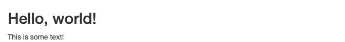
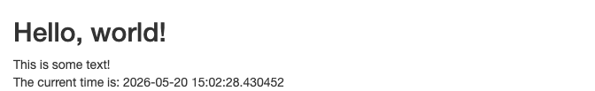
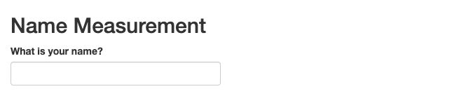
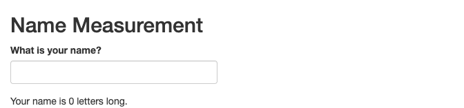
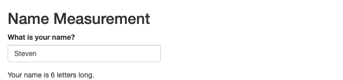
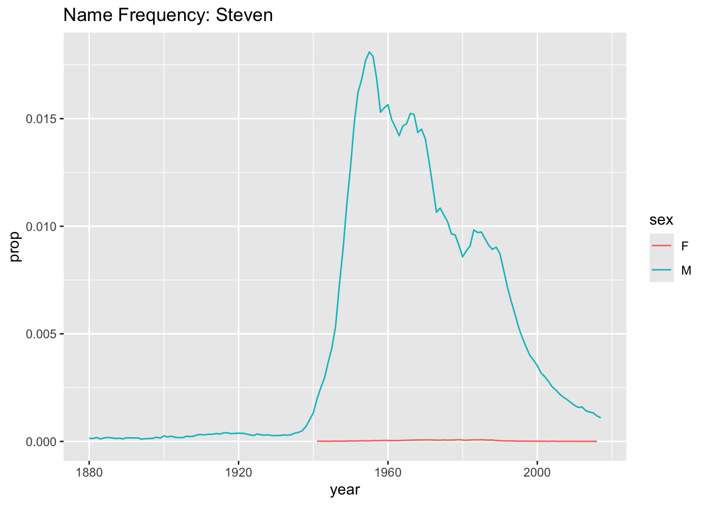
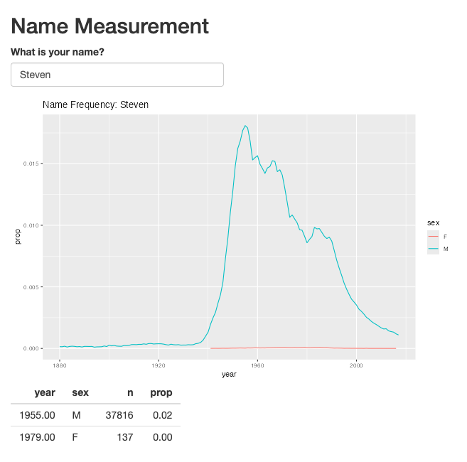
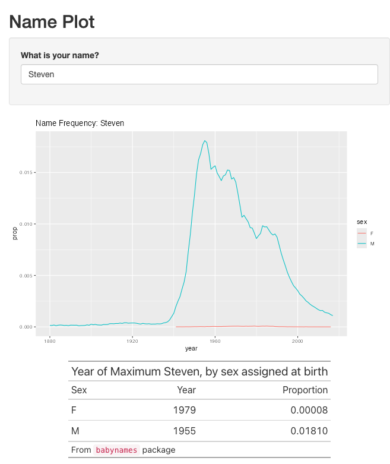
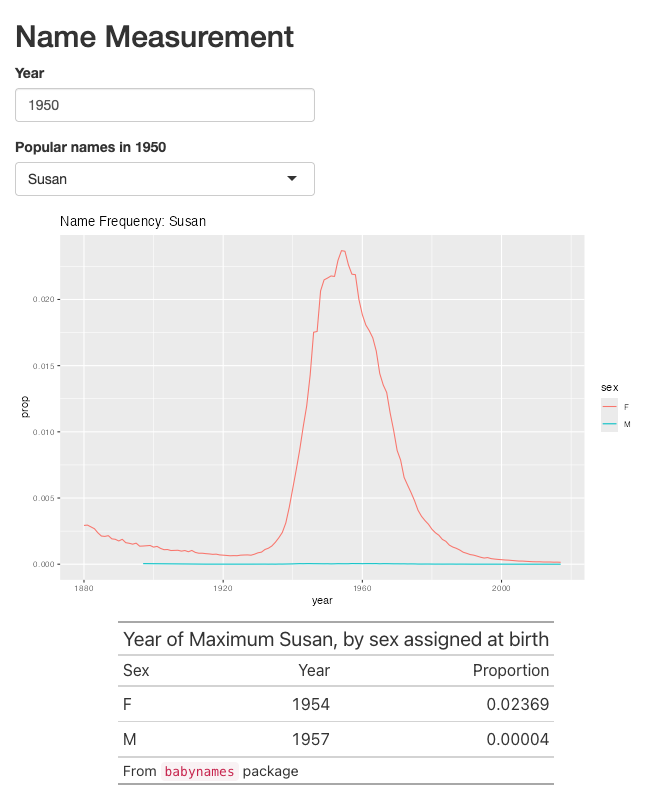

Lab 08: Interactive Vis With Shiny
BMI 5/625
Steven Bedrick
1 Introduction
Shiny is a powerful R library for making interactive web
sites containing visualizations and tables. In this lab, you will learn
the basics of designing and building a simple interactive dashboard for
exploring a data set. Since the final product of a Shiny application is
a web site, much of what you learned in the last lab will be useful this
week!
Note: Embedding Shiny apps within an RMarkdown document is something that has evolved greatly in recent years, and the method used in this document appears to no longer be super-functional; as such, the screenshots look a bit “off”. You’ll want to follow along yourself in Posit Cloud to see how they are “supposed” to look. Apologies!
1.1 Getting Started
To begin, install and load the shiny library. We’ll also
load the tidyverse:
library(shiny)
library(tidyverse)In the last lab, we learned about static web site. Under this model, the web site consists of a collection of HTML files (along with images, etc.); the user, via their web browser, requests those files from a server. The server’s role is to find the requested file, and then send it back to the browser (the response).
A Shiny application is an example of a dynamic website. The first part of the process is the same: the user interacts with the web site via their browser, and the results of their interactions (links or buttons clicked, form fields filled out, etc.) are sent to the server in the form of a HTTP request. The server’s role is quite different under a dynamic scenario. Instead of simply finding a static page on the disk and returning it, the server instead executes a program (whose location and other inputs are specified in the request), and sends the results (output) of that program back to the browser as the body of the HTTP response.
The results often take the form of rendered HTML. That is to say, HTML that is dynamically generated in response to the user’s actions and input, rather than loaded directly from a file on disk. In a Shiny application, this takes the form of an R program.
Shiny applications divide their world between a front end, the user interface that the browser displays, and the back end, the chunks of R code that are run in response to user actions.
1.2 First step with
shiny:
The structure of a shiny application is simple. You’ll
need a file called app.R, with three main pieces.
- Code describing the front end: what text goes where, what buttons are present, etc.
- Code describing the back end: what should happen in response to user activities (e.g. clicking a button), and how to compute figures, tables, etc.
- A call to the
shinyApp()function, to actually run your application
Here is a simple app.R:
library(shiny)
ui <- fluidPage(
titlePanel("Hello, world!"),
"This is some text!"
)
server <- function(input, output, session) {
# nothing to do here, for now
}
shinyApp(ui = ui, server = server)Try putting this in your app.R and run it. You should
see something like this:

Note above the titlePanel() function. This is a function
whose output is HTML:
titlePanel("Hello, world!")[1] "<h2>Hello, world!</h2>"We’ll see that Shiny includes a variety of other functions for controlling the HTML that goes in to our UI.
2 Make it dynamic
This is a complete application, but it doesn’t do anything interesting. Let’s make it a bit more interesting, and have it print the date and time that the page was loaded:
library(shiny)
ui <- fluidPage(
titlePanel("Hello, world!"),
"This is some text!",
textOutput("timestamp"),
)
server <- function(input, output, session) {
output$timestamp <- renderText({
paste0("The current time is: ", Sys.time())
})
}
shinyApp(ui = ui, server = server)There are a few new pieces here:
- We have added a
textOutputelement to our UI; - Assigned it the name
timestamp, and - In the
serverfunction, we are callingrenderText()to populate it:
There are corresponding *Output elements (and
render*() functions) for images, plots, tables, etc. We’ll
see examples of that as we move forward.
The other important thing to notice in this example is that we are
giving our UI element an identifier, “timestamp”,
which we then use later in the server function.
This is a key pattern in Shiny. A way to think about it is that the element IDs are links that let the front-end and back-end communicate with one another. When you run this application, you should see something like this:

If you reload the page in your web browser, you should see that the timestamp has been updated- it is recalculated dynamically each time the page is requested.
2.1 Collecting User Input
A key part of interactivity is the ability to to collect input from our user (for example, to specify which data set to visualize, set the title of a plot, a value to filter by, etc.). Shiny makes this easy. Our next application will ask the user for their name, and then tell us how long their name is. (This is kind of a silly example, but will illustrate how to capture user-entered info). Let us begin with the UI:
library(shiny)
ui <- fluidPage(
titlePanel("Name Measurement"),
textInput("name", label="What is your name?"),
textOutput("nameLength")
)
server <- function(input, output, session) {
}
shinyApp(ui = ui, server = server)We have added a new element: textInput. This is one of
the many *input() elements, corresponding to things like
text boxes, drop-down menus, date pickers, sliders (for entering numeric
values), etc. (See the Shiny
Widgets Gallery for examples of each of the available controls).
When we run this application, we should see something like this:

Try typing in the text field. You’ll see that the front-end of the site is working (it’s a text field, you can add text, copy and paste, etc.) but that nothing is happening in response to your input, because we haven’t configured the back-end to actually do anything.
How might we access the value of our name field
from the back-end? We have already seen that to set a value
in the UI from our back-end code, we used the
output variable; to get a value from the
UI, we use the input variable. We will use
stringr’s str_length() function, and send its
output back via renderText():
server <- function(input, output, session) {
output$nameLength <- renderText(
paste0("Your name is ", str_length(input$name), " letters long.")
)
}Try adding this line to your server function, and run the application. You should see something like this:

What happens if you type your name in the text box?

Note that the contents of the UI automatically updates when fields change. Shiny uses a reactive programming model, in which elements on the page automatically react to one another when they change.
Another thing to note here is that we are providing
textInput with a default value (“Steven”, in this
case).
Question: What happens if we don’t set a default value?
2.2 Including a plot
Let’s do something more interesting than just showing the length of a
name; let’s instead show a plot, using data from the
babynames package. The plot will be a simple line plot for
a particular name, split by sex:
babynames %>%
filter(name=="Steven") %>%
ggplot(mapping=aes(x=year, y=prop, color=sex)) +
geom_line() +
ggtitle("Name Frequency: Steven")
Nothing fancy, but that’s fine- let’s get it into our Shiny
application. We will use the
plotOutput/renderPlot function dyad:
library(shiny)
library(babynames)
ui <- fluidPage(
titlePanel("Name Measurement"),
textInput("name", label="What is your name?", value="Steven"),
plotOutput("namePlot")
)
server <- function(input, output, session) {
output$namePlot <- renderPlot({
babynames %>%
filter(name==input$name) %>%
ggplot(mapping=aes(x=year, y=prop, color=sex)) +
geom_line() +
ggtitle(paste0("Name Frequency: ", input$name))
})
}
shinyApp(ui = ui, server = server)plotOutput can take display figures made with either
plot() or ggplot().
Note that we are now providing the name text box a
default value, so that the page has something to show when it first
loads. What happens if you take that out?
Also note that our renderPlot() call is using
curly-braces, so that we can give it multiple lines of input.
2.3 Including a table
In addition to a plot, let’s also include a little data table showing the year in which the name in question was most popular. Our code to generate the table will look like this:
babynames %>%
filter(name=="Steven") %>%
group_by(sex) %>%
arrange(year) %>%
top_n(1, prop) %>%
select(-name) # A tibble: 2 × 4
# Groups: sex [2]
year sex n prop
<dbl> <chr> <int> <dbl>
1 1955 M 37816 0.0181
2 1979 F 137 0.0000795As you might imagine, Shiny has an
tableOutput()/renderTable() pair:
library(shiny)
library(babynames)
ui <- fluidPage(
titlePanel("Name Measurement"),
textInput("name", label="What is your name?", value="Steven"),
plotOutput("namePlot"),
tableOutput("nameTable")
)
server <- function(input, output, session) {
output$namePlot <- renderPlot({
babynames %>%
filter(name==input$name) %>%
ggplot(mapping=aes(x=year, y=prop, color=sex)) +
geom_line() +
ggtitle(paste0("Name Frequency: ", input$name))
})
output$nameTable <- renderTable({
babynames %>%
filter(name==input$name) %>%
group_by(sex) %>%
arrange(year) %>%
top_n(1, prop) %>%
select(-name)
})
}
shinyApp(ui = ui, server = server)
This is kind of basic-looking, but can be customized as much as one
might wish, using any of the table formatting techniques we discussed
earlier in the term. Notably, the gt package includes some
special Shiny-related functions. Here’s a fancier version of the table
from above:
babynames %>%
filter(name=="Steven") %>%
group_by(sex) %>%
arrange(year) %>%
top_n(1, prop) %>%
select(-name) %>% ungroup() %>% select(sex, year, prop) %>%
arrange(sex) %>%
gt() %>%
cols_label(sex="Sex", year="Year", prop="Proportion") %>%
fmt_number(columns=c(prop), decimals=5) %>%
tab_header(title="Year of Maximum Steven, by sex assigned at birth") %>%
tab_source_note(md("From `babynames` package"))| Year of Maximum Steven, by sex assigned at birth | ||
| Sex | Year | Proportion |
|---|---|---|
| F | 1979 | 0.00008 |
| M | 1955 | 0.01810 |
From babynames package |
||
We can integrate that into our Shiny display using gt’s
render_gt() and gt_output() functions:
library(shiny)
library(babynames)
library(gt)
ui <- fluidPage(
titlePanel("Name Measurement"),
textInput("name", label="What is your name?", value="Steven"),
plotOutput("namePlot"),
gt_output("nameTable")
)
server <- function(input, output, session) {
output$namePlot <- renderPlot({
babynames %>%
filter(name==input$name) %>%
ggplot(mapping=aes(x=year, y=prop, color=sex)) +
geom_line() +
ggtitle(paste0("Name Frequency: ", input$name))
})
output$nameTable <- render_gt({
babynames %>%
filter(name==input$name) %>%
group_by(sex) %>%
arrange(year) %>%
top_n(1, prop) %>%
select(-name) %>% ungroup() %>% select(sex, year, prop) %>%
arrange(sex) %>%
gt() %>%
cols_label(sex="Sex", year="Year", prop="Proportion") %>%
fmt_number(columns=c(prop), decimals=5) %>%
tab_header(title=paste0("Year of Maximum ", input$name, ", by sex assigned at birth")) %>%
tab_source_note(md("From `babynames` package"))
})
}
shinyApp(ui = ui, server = server)3 Organizing our app
At this point, our server function is getting a bit
unruly. A good practice is to encapsulate various parts of the
display into separate functions, like so:
library(shiny)
library(babynames)
library(gt)
makePlot <- function(nameToUse) {
babynames %>%
filter(name==nameToUse) %>%
ggplot(mapping=aes(x=year, y=prop, color=sex)) +
geom_line() +
ggtitle(paste0("Name Frequency: ", nameToUse))
}
makeTable <- function(nameToUse) {
babynames %>%
filter(name==nameToUse) %>%
group_by(sex) %>%
arrange(year) %>%
top_n(1, prop) %>%
select(-name) %>% ungroup() %>% select(sex, year, prop) %>%
arrange(sex) %>%
gt() %>%
cols_label(sex="Sex", year="Year", prop="Proportion") %>%
fmt_number(columns=c(prop), decimals=5) %>%
tab_header(title=paste0("Year of Maximum ", nameToUse, ", by sex assigned at birth")) %>%
tab_source_note(md("From `babynames` package"))
}
ui <- fluidPage(
titlePanel("Name Measurement"),
textInput("name", label="What is your name?", value="Steven"),
plotOutput("namePlot"),
gt_output("nameTable")
)
server <- function(input, output, session) {
output$namePlot <- renderPlot(makePlot(input$name))
output$nameTable <- render_gt(makeTable(input$name))
}
shinyApp(ui = ui, server = server)Note that the functions that make the plot and the table do not
directly reference the input variable provided by Shiny-
they would work just fine “one their own”, independent of whether we
were using Shiny or not. Similarly, the parts of the application
responsible for handling input and output via Shiny (i.e.,
textInput, renderPlot) do not need to concern
themselves with the details of what might be involved in generating the
plots.
This is an example of decoupling the different parts of our application from one another: the code to generate the tables and plots can be written and tested independently of the parts of the program that are , and as a result changes that we make to one part will (hopefully) not have any impact on the other parts.
4 Customizing the layout
Visually, the layout of our page is starting to get a bit long; what
if we wanted to arrange it so that the plot and the table were
side-by-side? Shiny gives us many options for controlling the layout;
the simplest is to arrange things in rows and columns.
Shiny uses the “Bootstrap” CSS library, which is built around a
12-column layout. We can use the fluidRow() and
column() functions to set things up a bit differently:
ui <- fluidPage(
titlePanel("Name Measurement"),
textInput("name", label="What is your name?", value="Steven"),
fluidRow(
column(6, plotOutput("namePlot")),
column(6, gt_output("nameTable"))
)
)Between fluidRow() and column(), you can
put together pretty much any layout you might want, but a useful
shortcut may be to use the sidebarLayout() function:
ui <- fluidPage(
titlePanel("Name Plot"),
sidebarLayout(
sidebarPanel(
textInput("name", label="What is your name?", value="Steven")
),
mainPanel(
plotOutput("namePlot"),
gt_output("nameTable")
)
)
)sidebarLayout() is one of several built-in layout helper
functions in Shiny, and can be used to quickly build a more complex
interface. Note that in the screenshot below, our “sidebar” is actually
being placed above the plot; in reality, pages using
sidebarLayout will be responsive to the window
size in which they are viewed. In a narrower window (or on a phone) it
will automatically reflow to a vertical layout.

5 Other controls
5.2 Getting Fancy:
observeEvent
Now let’s make the system more powerful. In the above example, I have
set the list of names to be the top 10 names from 2017. Let’s allow the
user to specify a year, using numericInput. This will
involve a few new concepts, specifically around linking the value of one
field to the value of another. First, let’s look at the UI:
ui <- fluidPage(
titlePanel("Name Measurement"),
numericInput("year", label="Year", min=1880, max=2017, value=2017),
selectInput("name", label="Which Name?", c()),
fluidRow(
column(6, plotOutput("namePlot")),
column(6, gt_output("nameTable"))
)
)We’ve added a new input control, which will only allow numeric input
that is within a certain range. We’ve also stopped manually specifying
our select box options, since we want the list to be dynamic: it should
contain the top ten names for the selected year. We need to
somehow connect the numericInput box that we have created
to the selectInput. We’ll do this in the server
function:
server <- function(input, output, session) {
namesToUse <- reactive({
babynames %>%
filter(year==input$year) %>%
group_by(sex) %>%
arrange(prop) %>% top_n(5) %>%
ungroup() %>% select(name)
})
observeEvent(namesToUse(), {
updateSelectInput(session, "name",
choices=namesToUse(),
label=paste0("Popular names in ", input$year)
)
})
# note: don't forget the code to actually make the plot and table!
} There are two new things here. First is the use of the
reactive() function, which sets up a new variable that
Shiny will be in charge of. Any R variable that we want to either
use or be used by a Shiny component must be wrapped in
a reactive() call. In this case, our list of names depends
on (i.e., is using) input$year, so we have to make it
reactive.
What does it look like?

Try it out: What happens if we don’t wrap
our code here in reactive()?
Once our list of common names has been made reactive, we can wire it
up to other parts of the UI via observeEvent(). Code inside
observeEvent() is run whenever the variable that it is
connected to changes; in this case, upateSelectInput() will
be run when a new year is entered. Pretty neat!
Understanding reactive() is key to being able to use
Shiny; I strongly recommend reading Chapter
3 of Mastering Shiny, as it gives a lucid and yet
relatively concise description of what is going on.
6 Deployment
See the deployment section of the shinyapps.io user guide for information about deploying a simple Shiny app.
7 Deliverable
For this week, you will construct and deploy a Shiny app that will
let the user explore the dataset of your choice (if you are out of
ideas, go with the pnwflights dataset that we used in Lab
5).
I strongly recommend referring to the Shiny links on the syllabus for additional information and ideas!